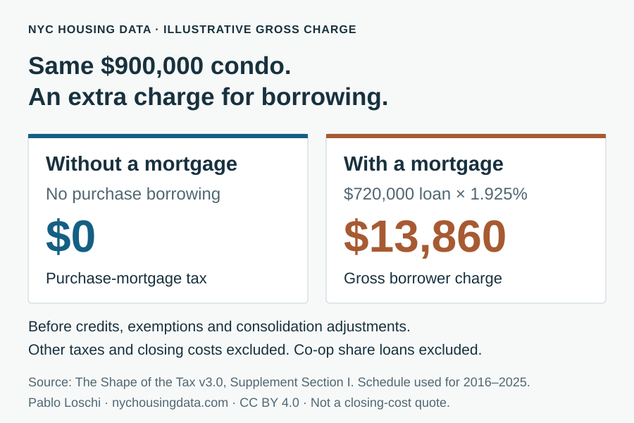

Buying & taxes
Four ways New York could make a first home cheaper to buy
Building more homes will take years. Moving the tax off mortgages, smoothing the transfer-tax cliffs and fixing the city’s sales data could happen much sooner.
Public records, explained by Pablo Loschi
New York home prices and taxes, explained through the records behind them.
Start here · Buying & taxes
Buyers who borrow owe a recording tax on the loan that a cash buyer never pays: $13,860 on a $720,000 mortgage. Should needing a loan raise the tax on buying a home? The figure is the gross charge before credits and exemptions.
Read the story
Tax thresholds, the cash discount and the records behind a price comparison.
Buying & taxes
Building more homes will take years. Moving the tax off mortgages, smoothing the transfer-tax cliffs and fixing the city’s sales data could happen much sooner.
Buying & taxes
Since 2019 a buyer at $2 million owes about $5,000 more in tax than a buyer at $1,999,999, and four in ten deals at the round number still pay it. Who stays on the line? The records show recorded prices, not how each deal was negotiated.
Prices & records
The sales file shows a $1,625,000 house sale. The form filed with the deed says it passed between relatives. In a random sample, 16 of 40 same-surname deeds declared such a condition, and the open data leaves the answers out.
Buying & finance
Houses bought for cash sell for about 9% less than the same houses bought with a mortgage. How much of that is a reward for a sure closing? Setting aside sales between people who share a surname halves it; a shared surname is a rough screen, not proof of a family sale.
Prices & records
Some foreclosure deeds record a bid or a cancelled debt where a sale price would be, and most reach the city’s sales file. How far does that move a price index? In the Bronx, 10.9 log points in 2010; some transfers cannot be classified from the public record alone.
Data & neighbourhoods
An incorrect lot-number limit in my code excluded valid candidate units. The earlier Bronx coverage gap should not be interpreted as missing public records.
Download the charts and their data, check the source notes or contact me about a finding.